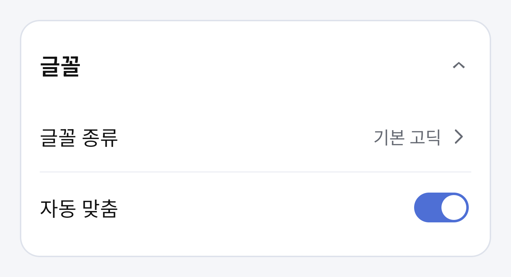
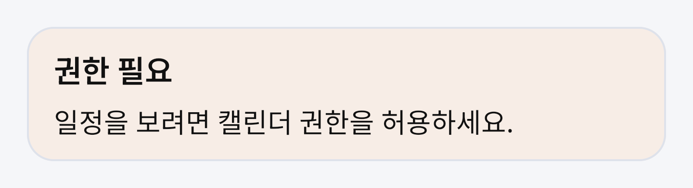
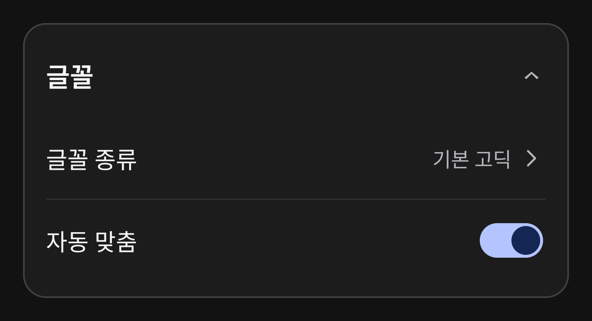
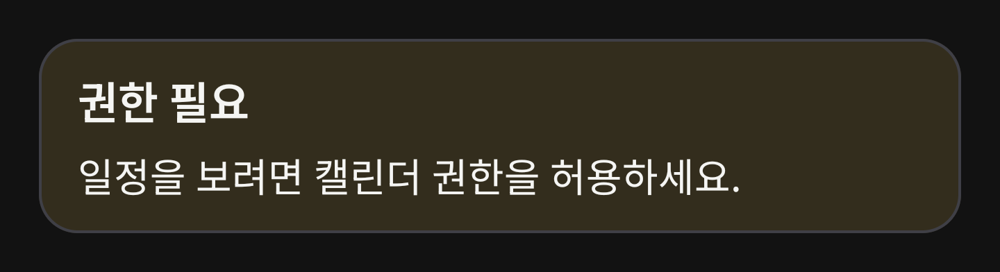

StudioSectionCard
관련 옵션, 안내, 요약과 펼침 영역을 묶습니다.
- 컴포넌트 ID
studio-section-card- 분류
- 구성
- 구현
StudioSectionCard·MyWidget/app/src/main/java/com/mywidget/editor/core/designsystem/component/StudioSectionCard.kt:62- 주요 API
- title, tone, expanded/onExpandedChange, headerTrailing, footerRow, bodySpacing, content
- 지원 상태
- 펼침
- 접힘
- 읽기 전용 요약
- 보조 안내
- 경고
- 변형
- Surface
- Muted
- Warning
- 제목 있음/없음
- 하단 보조행
- 크기
- 반경 16dp
- 헤어라인 1dp
- 헤더와 본문 6dp
- 컴팩트 좌우 14dp·제목 위 10dp·아래 4dp
- 테마·토큰
- outlineVariant
- StudioInspectorDefaults
- WidgetEditorPopupTokens
- 접근성·사용 규칙
- 접힘 상태 설명과 헤딩을 사용합니다. 헤더 부가 동작은 따로 포커스할 수 있습니다.
- 공통 사용 여부
- 5개 도구 탭·기능 연결·인터랙션·색상 팔레트에서 사용
- 설계 품질
- 제목 간격과 옵션 행 간격이 분리됨
- 판단
- 유지
- 판단 근거
- 얇은 경계로 관련 옵션을 묶고 카드 외부의 도메인 흐름을 보존합니다.
- 구현·문서
- 현재 소스 위치와 심볼 확인
- 렌더링
- 네이티브 캡처 있음
코드 예시
StudioSectionCard(title = "권한 필요", tone = StudioCardTone.Warning) { Text("일정을 보려면 캘린더 권한을 허용하세요.") }Android 네이티브 예시
아래 캡처에 표시된 상태와 기기 조건을 확인했습니다.

411 × 891 dp · 560 dpi · 글꼴 1배 · API 35 · ko-KR
캡처 기준 HEAD
28c96a452 · 소스 지문 2926a62326fe · 2026-11-13T13:54:53.964821Z
411 × 891 dp · 560 dpi · 글꼴 1배 · API 35 · ko-KR
캡처 기준 HEAD
28c96a452 · 소스 지문 2926a62326fe · 2026-11-13T13:54:53.964821Z
411 × 891 dp · 560 dpi · 글꼴 1배 · API 35 · ko-KR
캡처 기준 HEAD
28c96a452 · 소스 지문 2926a62326fe · 2026-11-13T13:54:53.964821Z
411 × 891 dp · 560 dpi · 글꼴 1배 · API 35 · ko-KR
캡처 기준 HEAD
28c96a452 · 소스 지문 2926a62326fe · 2026-11-13T13:54:53.964821Z사용 화면
- 배경·테두리 인스펙터
- 프레임 손그림
- 텍스트 인스펙터
- 글자 상세와 세부 조판
- 색상·그라데이션 팔레트
- 데이터 인스펙터
- 모양 인스펙터
- 레이어 인스펙터
- 위젯 크기 개요·초기화
- 목록 편집·표시·체크 설정
- 이미지 관리와 표시
- 수동 목표 편집
- 기능 연결 카탈로그
- 직접 입력과 연결 전환
- 기능 연결 상세 공통
- 선택형 상세 옵션
- 타이머 시간 선택
- 현재 날짜
- D-Day 문구
- 현재 시간
- 스톱워치·타이머
- 아날로그 시계
- 오늘의 진행률
- D-Day 진행률
- 날씨 온도
- 날씨 상태 문구
- 최고·최저 기온
- 날씨 한 줄 안내
- 현재 위치
- 날씨 아이콘
- 대기질 아이콘
- 걸음수 문구
- 걸음 목표
- 저장 공간 진행률
- 캘린더 일정 목록
- 다음 일정
- 달력 연결 설정
- 손글씨 메모 연결
- 위젯 값 읽을 블록
- 위젯 값의 속성·표시 옵션
- 일반 소스 옵션
- 기능 연결 권한·복구
- 터치 인터랙션 목록
- 터치 동작 1단계 · 대상
- 터치 동작 3단계 · 액션
- 값 변경·기능 설정·사진 교체 액션
- 진행률 증가·감소 액션
- 목록 고정 항목 추가 액션
- 설치 위젯 기능 연결 옵션
- 디자인 시스템 쇼케이스